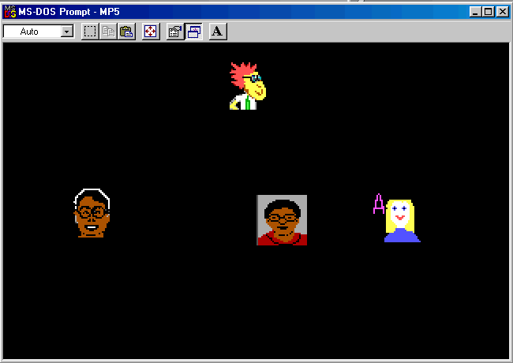

| ECE291 |
Computer Engineering II |
Lockwood, Spring 1999 |
Machine Problem 5: Network Tag
Network and Game Play Algorithms
| Assigned |
Thursday, April 1, 1999 |
| Due Date |
Tuesday, April 13, 1999, 5pm |
| Purpose: |
Networking, concurrency, and game-play algorithms
|
| Points | 50 |
Introduction
For MP5, we will complete the game of Network Tag
by adding the code to process multicast datagrams, read the
status of the mouse control, and implement the game control algorithms.
Our program allows up to 63 players to simultaneously
play a game of Network Tag.
A screen shot of an actual game is shown below:

We each represent ourself in the game with our unique bitmapped image.
When we enter the game, we transmit our 32x32, 16-color, BMP image
to everyone else in the game within a HELLO message.
Upon receiving a HELLO message, other players
store our image into a local variable on their machine
called ImageArray and note that we
are active by updating a flag in the Player variable.
Once every two seconds, we retransmit our HELLO message to reach new players
that may have just entered the game.
The position of the mouse will be used to
determine the position of our image
on the screen. Over the network, we will transmit our
position in an UPDATE message to
the other players in the game.
We learn of the positions
of other players by listening to the network.
We store information from other players in our local Player
variable.
Positions are specified as an offset on a mode-13 VGA screen.
Our movements are limited to within
the perimeter of the 320x200-pixel screen.
Program Operation
Before you begin playing Network Tag,
Copy MyImage.bmp from your MP4 directory
to your MP5 directory.
When the game first begins, one player may become it by pressing the
left mouse button. For the rest of the game,
It is transferred by contact with another player.
when we become it, we cannot tag back
the player that just touched us (i.e., no tag-backs).
Pressing the right mouse
is a cheat buttom that releases it.
We can leave the game at any time by pressing both the left and
right mouse buttons at the same time.
Just before we exit, we send a GOODBYE message to the other players in
the game to let them know we are no longer active in the game.
Run the program in the lab on one or more
machines until you understand how it works.
If MP5 doesn't run on your home machine,
it is because NetBIOS is not properly installed on your machine.
For this MP, it is suggested that you work in the lab.
Network Protocol
As described above, there are three
types of messages are exhanged between players: HELLO, UPDATE, and GOODBYE.
All messages begin with a byte that identifies the message type.
The next byte of the message identifies the player that sent the message.
The rest of the bytes contain the message data.
The structure definitions for these messages are
given at the beginning MP5.ASM.
Multicast Datagrams are used to transmit messages among players.
All Messages are sent to a NetBIOS group called ECE291MP5 are received
by all players in the game. When a player first joins they game, they
are given the first available name between
ECE291Player00 and ECE291Player63.
To simplify the programming for NetBIOS, you have been given NETLIB.LIB --
a library which provides function calls to send and receive datagrams.
The NetLIB library calls are summarized below.
Additional documentation about NetBIOS and Lockwood's NetLIB functions
can be found on our
ECE291
Class Resources Web Page.
NetInit: Initializes Network - Returns: Player num in AL
SendPacket: Transmits data in TXBuffer - Inputs: AX = Length
NetRelease: Release network resources
netpost : Procedure called when datagram arrives.
Called with AX = Length, BX = Pointer to RXBuffer
Must preserve all registers modified
Ends with RET (not IRET)
TXBuffer: Transmit Buffer (1024 bytes) - Write your data here
RXBuffer: Receive Buffer (1024 bytes) - Read from here !
Important Variables
To understand how network tag operates, consider
the information stored at each node.
- Player: 64-element array of PlayerType.
Stores position and status of remote users.
Modified when packets arrive and used to redraw the screen.
- ImageArray: 64-element array of 1024-byte, uncompressed images.
Holds local copy of remote user images.
- MyNum: My player number (as determined by NetINIT)
- ItNum: The number of the player that I think is it.
- TagNum: The number of the player that tagged me
- MyPosition: My location on the screen (an from the top-left offset)
Problem Assignment
To help you save time, I have given you the source code for the main
procedure. This code controls the flow of the game and
transmits packets to the other players in the game.
It is your job to first read and understand this code.
You will then complete the program
using your own routines from parts I and II of this MP.
You may cut & paste your graphic routines from MP4
into MP5.ASM.
Edit MP5.ASM to add your new procedures for
mouse control, data reception, and updating the screen.
Network, Mouse, and Screen Routines
- All routines should preserve the values of
any registers modified
- Use proper segments where needed
- MouseMove
- Purpose: Position self on the screen
at the location of the mouse
- Variables Updated
- MyPosition: Sets MyPosition to correspond to mouse location
- Recall that MyPosition is specified to be the screen
offset for the top-left corner of MyImage.
- Limit the range of MyPosition to prevent drawing
MyImage to the extreme right or extreme bottom of the
the screen.
- ItNum/TagNum: Set ItNum=MyNum and
TagNum=63 if left button pressed
(allow me to become it)
- ItNum/TagNum: Set ItNum=63 if right button pressed
(force self to not be it)
- ExitFlag: Set ExitFlag=1 if right mouse button pressed
(allow program to exit)
- Hints
- MouseMove can poll the mouse position using an Int 33h routine.
- Recall that mouse positions range over X=(0..639) and Y=(0..199).
- Note that MyPosition is based on a screen resolution of 320x200.
- ReDrawScreen
- Purpose: Redraw the screen with up to 63 players
- Array Variable Used: Player
- Output: Writes directly to screen
- Calls Functions: DrawBox, DrawEmptyBox, DrawBMP
- Description:
Redraw each ACTIVE player on the screen at their current position.
Outline the player with an empty box when they are it.
If a player is DEPARTING, remove their image and set their staus
to INACTIVE.
- NetPost
- Purpose: Process Incoming Datagrams
- Array Variables Modified: Player
- Output registers: None! (processed within an interrupt)
- Calls Functions: StoreBMP
- Description: The NetPost function is called by
NetLIB whenever a datagram
arrives. The actions taken depend on the message type.
- HELLO: Set the player status to active
and store their image to the array.
- UPDATE:
- Update the player's current position.
- If some other player is it AND that player
overlapping me AND that player wasn't tagged by me,
then I should become it.
(ItNum=MyNum, TagNum=PlayerNum).
- If some other player is it AND that player
is NOT overlapping me
then let him/her become it
(ItNum=PlayerNum).
- If some other player is it AND that player
was tagged by me, let him/her continue to be it
then let him/her become it
(ItNum=PlayerNum).
- GOODBYE: Set the player status to departing.
Let the ReDrawScreen take care of removing
the user from the screen.
- Hints:
- You will receive messages from yourself!
Points
You will earn the following points for replacing each of the subroutines
with your own code.
- MouseMove: 15 pts
- ReDrawScreen: 15 pts
- NetPost: 20 pts
Preliminary Procedure
- Obtain the MP5 files by downloading them from the web as
mp5.zip or
copying them from the netork drive with the following command:
xcopy /s V:\ECE291\MP5\ W:\MP5
- Copy the 'myimage.bmp' you created for MP4 into your MP5 directory:
copy W:MP4\MyImage.bmp W:\MP5
- Run the code in the lab to understand how it works. Experiment
with the operation of the left mouse button, the right mouse
button, and pressing both the left and right mouse buttons
together.
- Read the existing code given in MP5.ASM. Be sure that you understand
the program framework before you write the individual routines.
MP5.ASM
PAGE 75, 132
TITLE MP5.ASM your name
Comment *
NETWORK TAG - Network Routines
------------------------------
ECE291: Machine Problem 5
Prof. John W. Lockwood
University of Illinois, Dept. of Electrical & Computer Engineering
Spring 1999
Revision 2.1
*
.MODEL LARGE ; Allow Multiple Segments
.486 ; Enable use of 32-bit registers
OPTION NOOLDMACROS
; ===== Handy General-Purpose MACROS ======================================
INCLUDE MACROS.INC
;====== Bitmap structure definition =======================================
BMPTYPE STRUC
; --- BitMapFileHeader --- ; 14 bytes
BFType DB 'BM' ; File Type
BFSize DD ? ; File Size (in Bytes)
BFReserved1 DW 0 ; Reserved
BFReserved2 DW 0 ; "
BFOffBits DD ? ; Offset to start of image data
; --- BitMapInfoHeader --- ; 40 bytes
BISize DD ? ; Size of BitMapInfoHeader (28h = 40d)
BIWidth DD ? ; # Pixel Rows
BIHeight DD ? ; # Pixel Columns
BIPlanes DW 1 ;
BIBitCount DW ? ; Log2(palette size) = 4 for 16-color image
BICompression DD 0 ; RGB = 0 = Uncompressed
BISizeImage DD ? ; Size of Image (Bytes)
BIXPelsPerMeter DD ? ;
BIYPelsPerMeter DD ? ;
BIColorsUsed DD 0 ; 0=All
BIColorsImportant DD 0 ;
; --- Color Table --- ; 64 Bytes
RGBQuad DB 16 dup ( 4 dup(?) ) ; Blue, Green, Red, Unused
; --- Image Data Follows ; n Bytes
ImageData DB 512 dup(0) ; Image data (bottom row first)
BMPTYPE ENDS
;====== Network Info =====================================================
; ---- Network Player Information ---
INACTIVE EQU 0
ACTIVE EQU 1
DEPARTING EQU 2
PlayerType STRUC
OldPosition DW 320*100+160-16 ; Location specified as VGA MODE-13 Offset
CurPosition DW 320*100+160-16 ; (Start at center of the screen)
Status DB INACTIVE ; All Players Initially Inactive
PlayerType ENDS
; ---- Network Message Types & Formats ---
HELLO EQU 33
UPDATE EQU 21
GOODBYE EQU 22
GenericMsg STRUC ; Generic Message Structure
MsgType db ? ; 1-byte packet type identifier (See types below)
PlayerNum db 63 ; Player that transmitted the message
GenericMSG ENDS
HelloMsg STRUC ; Hello Message
MsgType db HELLO
PlayerNum db 63
Image db 630 dup(?) ; 118+32*32/2 bytes
HelloMsg ENDS
UpdateMsg STRUC ; Update Message
MsgType db UPDATE
PlayerNum db 63
Position dw ? ; My Current Position
It_Flag db 0 ; 1 if It, 0 otherwise
Tagged_by db ? ; Player number that tagged me
UpdateMsg ENDS
GoodByeMsg STRUC ; GoodBye Message
MsgType db GOODBYE
PlayerNum db 63
GoodByeMsg ENDS
;====== Stack Segment =====================================================
stkseg segment stack ; *** STACK SEGMENT ***
db 64 dup ('STACK ')
stkseg ends
;====== BMP Segment =======================================================
bmpseg segment public ; *** BMP Segment ***
bmp bmptype < >
bmpseg ends
PUBLIC bmp
;====== Image Segment ====================================================
imageseg segment public ; *** IMAGE Segment ***
ImageArray db 32 dup( 512 dup(4,15), 512 dup(2,15) )
; 64 Images * 1024 bytes : red/white , greeen/white Stripe pattern
imageseg ends
PUBLIC imagearray
;====== Define code segment ===============================================
cseg segment public 'CODE' ; *** CODE SEGMENT ***
assume cs:cseg, ds:cseg, ss:stkseg, es:nothing
;====== External procedures ===============================================
; -- Lib291 (Free) --
extrn kbdin:near, binasc:near, dspmsg:near, dosxit:near
; -- LibNet (Free) --
extrn NetInit:near, SendPacket:near, NetRelease:near, NetTest:Near
extrn TXBuffer:byte, RXBuffer:byte
; -- LibMP5gr --
extrn LibLoadBMP :near
extrn LibStoreBMP :near
extrn LibDrawBMP :near
extrn LibDrawBox :near
extrn LibDrawEmptyBox :near
; -- LibMP5nt --
extrn LibReDrawScreen :near
extrn LibMouseMove :near
extrn LibNetPost :near
extrn MP45Xit:near
;====== Variables ========================================================
MyNum db 63 ; My Player Number
PUBLIC MyNum
ItNum db 63 ; Who is it
PUBLIC ItNum
TagNum db 63 ; Who tagged me
PUBLIC TagNum
player PlayerType 64 dup(< >) ; Player Array
PUBLIC player
MyPosition dw 320*100+160-16 ; Start at middle of screen
PUBLIC MyPosition
ExitFLag db 0 ; 0=Play, 1=exit
PUBLIC ExitFlag
MyImage db 'myimage.bmp',0 ; Null-terminated filename
PUBLIC MyImage
pbuf db 7 dup(?)
crlf db CR,LF,'$'
Num320 dw 320
SizePlayerType db Sizeof Playertype
grp_name db 'ECEMP5NetTag$$$$' ; Set this name for your own use
; (But keep sting length=16)
my_name db 'ECEMP5Player00$$' ; Set this name for your own use
; (But keep sting length=16,
; and location of 00 unchanged)
PUBLIC grp_name, my_name
; Debugging variables from netlib
rxinvalid dw 0 ; Number of Invalid packet types
rxhello dw 0
rxupdate dw 0
rxgoodbye dw 0
rxbadlength dw 0 ; Number of Wrong-length packets
PUBLIC rxinvalid, rxhello, rxupdate, rxgoodbye, rxbadlength
;======= Graphic Routines (Existing mp4 routines) ========================
; Cut and paste your MP4 routines here
LoadBMP PROC NEAR
Call LibLoadBMP ; Replace with your code!
RET
LoadBMP ENDP
StoreBMP PROC NEAR
Call LibStoreBMP ; Replace with your code!
RET
StoreBMP ENDP
DrawBMP PROC NEAR
Call LibDrawBMP ; Replace with your code!
RET
DrawBMP ENDP
DrawBox PROC NEAR
Call LibDrawBox ; Replace with your code (MP4)!
RET
DrawBox ENDP
DrawEmptyBox PROC NEAR
Call LibDrawEmptyBox ; Replace with your code (MP4)!
RET
DrawEmptyBox ENDP
PUBLIC LoadBMP, StoreBMP, DrawBMP, DrawBox, DrawEmptyBOX
;======= Network Routines (New MP5 Routines) ============================
; Your new code goes Here !
ReDrawScreen PROC NEAR
; Redraws the screen for all active players
; Indicates who is IT using EmptyBox
Call LibReDrawScreen ; Replace with your code (MP5) !
RET
ReDrawScreen ENDP
MouseMove PROC NEAR
; Updates MyPosition based on location of mouse
; Sets ItNum=MyNum and TagNum=63 if left mouse button pressed
; Sets ExitFlag=1 if right mouse button pressed
Call LibMouseMove ; Replace with your code (MP5) !
RET
MouseMove ENDP
NetPost PROC NEAR
; Callback function for incoming network messages
; Handles HELLO and UPDATE messages
Call LibNetPost
RET ; Replace with your code (MP5)!
NetPost ENDP
public netpost
PUBLIC ReDrawScreen, MouseMove, NetPost
; ====== MAIN Routine ====================================================
HelloTime dw 0
UpdateTime dw 0
main proc far
mov ax, cseg ; Initialize DS register
mov ds, ax
mov ax,0 ; init mouse
int 33h
mov ax,1 ; Show Mouse
int 33h
GetTime
SUB AX,18*2 ; Retransmit timers for HelloMsg and UpdateMsg
MOV HelloTime, AX
MOV UpdateTime,AX
Call NetINIT ; Initialize Network
Mov MyNum , AL
Mov DX,offset MyImage ; Load MyImage into BMP
Call LoadBMP
GMODE ; Begin graphics mode
MainLoop:
GetTime
SUB AX,cs:HelloTime ; Send Hello Message once per 2 seconds
CMP AX,18*2
JB NoHelloMessage
MOV (HelloMsg PTR TXBuffer).MsgType , HELLO
MOVMB (HelloMsg PTR TXBuffer).PlayerNum , MyNum
STRCPY (HelloMsg PTR TXBuffer).Image , BMP , 630
MOV AX,SizeOf HelloMsg
Call SendPacket
GetTime
Mov HelloTime,AX
NoHelloMessage:
GetTime
SUB AX,UpdateTime
CMP AX,2 ; Send Update Message 9 times per second
JB NoUpdateMessage
Call MouseMove ; Update MyPosition, Exit status, and It
MOV (UpdateMsg PTR TXBuffer).MsgType, UPDATE
MOVMB (UpdateMsg PTR TXBuffer).PlayerNum, MyNum
MOVMW (UpdateMsg PTR TXBuffer).Position, MyPosition
MOV AL,ItNum
.if MyNum==AL
MOV (UpdateMsg PTR TXBuffer).It_Flag, 1
.else
MOV (UpdateMsg PTR TXBuffer).It_Flag, 0
.endif
MOVMB (UpdateMsg PTR TXBuffer).Tagged_By, TagNum
MOV AX,SizeOf UpdateMsg
Call SendPacket
GetTime
Mov UpdateTime,AX
NoUpdateMessage:
Call ReDrawScreen ; Redraw the screen
CMP ExitFlag,0
JE MainLoop
TMODE ; Return to text mode
PRINTSTR 'My_Name: ' , My_Name
PRINTSTR 'Group : ' , grp_Name
PRINTMSG 'Sending Goodbye Message '
MOV (GoodbyeMsg PTR TXBuffer).MsgType, GOODBYE
MOVMB (GoodbyeMsg PTR TXBuffer).PlayerNum, MyNum
MOV AX,SizeOf GoodbyeMsg
Call SendPacket
MainDoneNet:
Call NetRelease
call mp45xit
main endp
cseg ends
end main